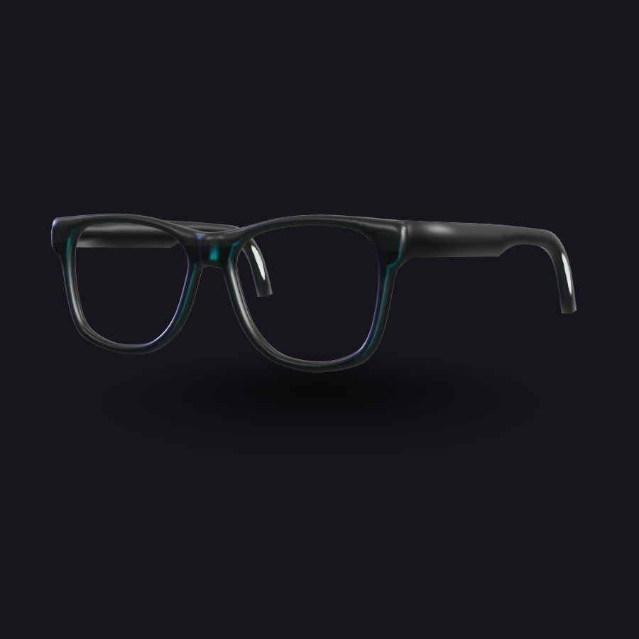

Portfólio digital Belo Horizonte, MG

Sou designer gráfico e trabalho na interseção entre comunicação, criatividade e tecnologia. Transformo ideias em experiências visuais claras, úteis e com personalidade.
- Design gráfico e editorial
- Comunicação institucional
- Web, 3D e interativos
01 Prazer, sou eu
Criatividade que encontra caminhos.
Sou Davi Caetano, designer gráfico com experiência em comunicação institucional, projetos editoriais, conteúdo digital e experiências interativas.
Minha trajetória começou no design freelancer e ganhou novas perspectivas na indústria, na informática e na educação. Hoje, na Assessoria de Comunicação Social da Cohab Minas, desenvolvo soluções visuais que aproximam informação e pessoas.
Gosto de pensar além da peça final: entender o problema, organizar ideias e encontrar uma forma de comunicar que seja bonita, funcional e acessível.
- Criando desde
- 2016
- Projetos neste portfólio
- 9
- Palestras sobre criatividade e IA
- 2
Em destaque Experiência interativa
Helena Antipoff em 3D
Um ano de trabalho colaborativo com a Fundação Helena Antipoff e o Fab Lab FHA para reconstruir digitalmente a escultura, combinando Blender e recursos de inteligência artificial.
Arraste para girar · Roda ou pinça para aproximar
Da escultura ao modelo digital
Uma estátua guarda memória, mas não vai a todos os lugares. O modelo 3D permite girar, aproximar e estudar a forma de Helena Antipoff de qualquer tela, e abre caminho para exibições digitais e reproduções.
Explore a escultura de diferentes ângulos e descubra detalhes que nem sempre são perceptíveis em uma fotografia.
O processo de aproximadamente um ano combinou referências da escultura original, recursos de inteligência artificial e modelagem no Blender, em colaboração com a Fundação Helena Antipoff e o Fab Lab FHA.
- 01Fotografias de referência
- 02Inteligência artificial
- 03Refinamento no Blender
- 04Modelo no navegador
02 Trabalhos
Projetos selecionados
Escolha um projeto para conhecer a história, explorar as imagens e descobrir o resultado.
Nenhum projeto nesta categoria por enquanto.
03 Experiência
Onde construí minha trajetória
Minha experiência reúne design gráfico, comunicação institucional, educação e tecnologia. Conheça os lugares e projetos que fazem parte dessa trajetória.
-
Atual Abr. 2026 a hoje
Cohab Minas
Design Gráfico · ASCOM, Assessoria de Comunicação Social
Materiais editoriais e institucionais, apresentações, campanhas internas e ferramentas para a comunicação da companhia, como o projeto REURB.
-
Mar. a jul. 2026
PRONATEC
Professor · Técnico em Multimídia
Aulas práticas de imagem, vídeo e áudio e acompanhamento dos projetos da turma.
-
Nov. 2023 a abr. 2026
Fundação Helena Antipoff
Comunicação · Informática · Eventos
Atuação em informática, assessoria de comunicação e produção de eventos, com criação de conteúdo, suporte audiovisual e experiências digitais.
-
Jun. 2022 a jun. 2023
Jabil do Brasil
Técnico de Processos
Estudo de tempos, melhoria de layout e fluxo produtivo. Certificação interna Lean Bronze.
-
Fev. 2016 a mar. 2022
Design gráfico freelancer
Identidade visual · Conteúdo · Materiais gráficos
Projetos de identidade visual, peças para redes sociais, materiais impressos e digitais, apresentações e tratamento de imagens para diferentes clientes.
Formação
- Tecnologia em Design GráficoUNOPAR · 2024 a 2025
- Técnico em InformáticaFundação Helena Antipoff · 2023 a 2024
- FIC Organizador de EventosPRONATEC · concluído
Áreas e ferramentas
Design
- Photoshop
- Illustrator
- InDesign
- PowerPoint
- Affinity
- Premiere Pro
- CapCut
Código
- HTML
- CSS
- JavaScript
- three.js
- React
- TypeScript
04 Contato
Vamos conversar?
Tem um projeto, uma ideia ou uma oportunidade? Escreva, e eu respondo.